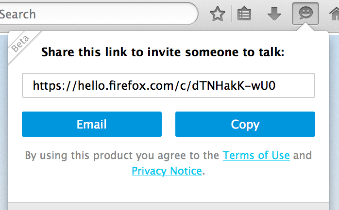
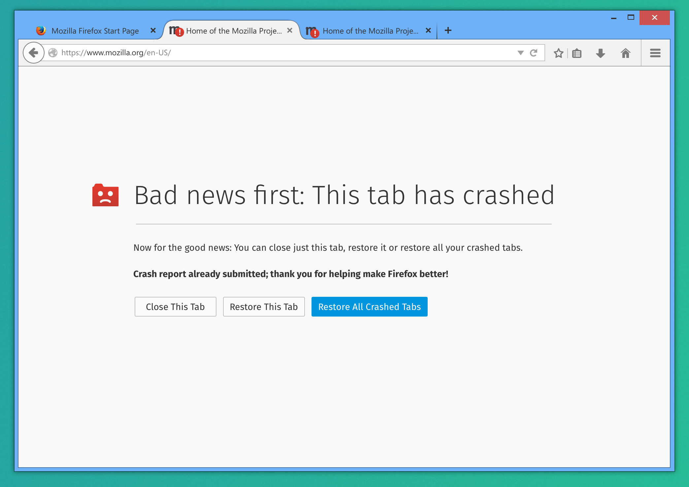

Interning on the Firefox Desktop Team
whois mconley
Two-week iterations on prioritized backlog
Interns work right with us there
A subset of current focuses of the Firefox Desktop team
Hello (built-in, encrypted collaboration tools based on WebRTC)
- Multiple "rooms"
- Screen-sharing
- Call history
- Lots of polish, refinement to remove Beta sticker
Firefox Developer Edition / DevTools

- Lots of good stuff coming in from UserVoice
- A JS Editor for fiddling with site scripts on the fly
- WebSocket connection inspector
- "Break on mutate"
- Much, much more
Electrolysis / e10s (multi-process Firefox)
Separate rendering and processing of web content from the main browser process
- This is a major architectural change spanning many parts of Firefox
- We have to refactor and async-ify mature code to account for multiple processes
- Find ways to make things easier for our add-on authors
- Sandboxing the content process
- Stability-work and performance
Quick shoutout to projects not represented here
Too many cool things are happening all at once
- Firefox for iOS
- Firefox for Android
- Firefox OS (phones, tablets, televisions, more?)
- Cloud Services (Firefox Accounts, Location, Marketplace)
Getting involved with Firefox Desktop right now
- Prior experience hacking on Firefox catches our eye
- If you're proficient with JavaScript, HTML and CSS, you're in good shape
- BugsAhoy
- codefirefox.com
- Come talk to us in IRC! irc.mozilla.org, #introduction is a great place to get started
- Follow @startmozilla for interesting bugs we need help on
- We guide you and mentor you. That's part of our job.
Thanks!
- Fork mah slides github.com/mikeconley/fx-desktop-intern-talk-2015.1
- Reach me on IRC - I'm mconley, or email me at mconley@mozilla.com
- Twitter: @mike_conley
- Blog: mikeconley.ca
- Check out my bugnotes people.mozilla.org/~mconley2/bugnotes
Some quick demos
/